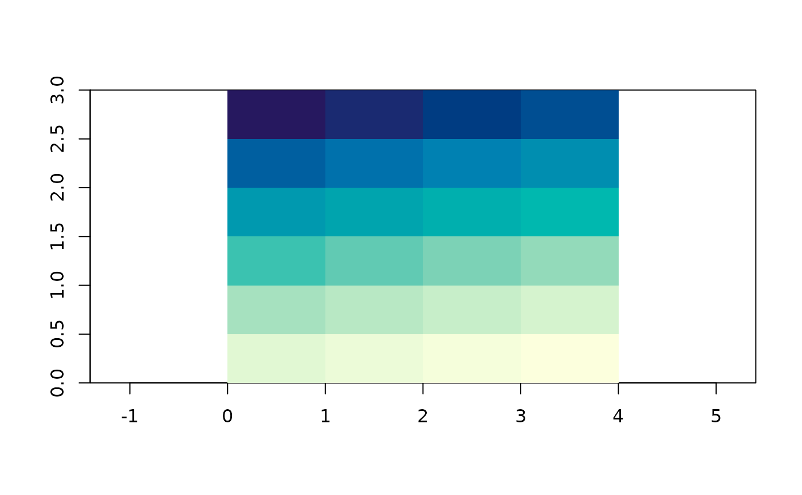

Every interpolation in this package produces a grid, and a grid here is a list of four things. There is no fifth thing and no class hierarchy to learn.
library(guerrilla)
g <- grid_spec(dimension = c(8, 6), extent = c(0, 4, 0, 3))
str(unclass(g))
#> List of 4
#> $ dimension: int [1:2] 8 6
#> $ extent : num [1:4] 0 4 0 3
#> $ crs : NULL
#> $ values : NULLdimension is how many cells across and down, in that
order. extent is the outer boundary as
xmin, xmax, ymin, ymax. crs is what the
coordinates mean, or NULL when nobody said.
values is one number per cell, filled in later by whatever
produced it.
That is genuinely all a raster is. Every raster class in R holds these same few numbers plus a vector, and the rest is convenience. Keeping them in a plain list means the interpolation code can be read without knowing anything about raster classes, which is the point of the package.
Where the cells are
Cell size is not stored, because it is extent divided by
dimension and storing it too would let the two
disagree:
grid_res(g)
#> [1] 0.5 0.5
grid_ncell(g)
#> [1] 48Cell centres come from grid_xy(). That one function is
everything the interpolation code needs to know about grids:
head(grid_xy(g))
#> [,1] [,2]
#> [1,] 0.25 2.75
#> [2,] 0.75 2.75
#> [3,] 1.25 2.75
#> [4,] 1.75 2.75
#> [5,] 2.25 2.75
#> [6,] 2.75 2.75Cells run left to right along the top row first, then down. That is
the raster convention everywhere, and it is why every conversion in this
package and every comparison with another package involves a
rev() somewhere.
plot(g_filled <- local({ g$values <- seq_len(grid_ncell(g)); g }))
The first cell is the top left one and holds 1.
All of the arithmetic comes from , which does grid index work in base R with no dependencies at all:
vaster::cell_from_xy(g$dimension, g$extent, cbind(0.5, 2.8))
#> [1] 2
vaster::xy_from_cell(g$dimension, g$extent, 1)
#> [,1] [,2]
#> [1,] 0.25 2.75Making one
grid_spec() takes points and covers them:
set.seed(1)
xy <- cbind(runif(50), runif(50))
grid_spec(xy)
#> <guerrilla grid>
#> dimension : 60, 50 (ncol, nrow) = 3000 cells
#> extent : 0.01339033, 0.99190609, 0.05893438, 0.96061800 (xmin, xmax, ymin, ymax)
#> resolution: 0.01630860, 0.01803367
#> crs : <none>
#> values : <none>The extent is exactly the range of the points, so the outermost
samples sit on the boundary. Often you want a margin, and
pad is a proportion of the span:
grid_spec(xy, pad = 0.1)
#> <guerrilla grid>
#> dimension : 60, 50 (ncol, nrow) = 3000 cells
#> extent : -0.08446124, 1.08975767, -0.03123398, 1.05078636 (xmin, xmax, ymin, ymax)
#> resolution: 0.01957032, 0.02164041
#> crs : <none>
#> values : <none>dimension and extent can be given directly,
and either can come from somewhere else entirely. as_grid()
reads a RasterLayer or a SpatRaster, so a
target grid from another package works as-is:
if (requireNamespace("terra", quietly = TRUE)) {
as_grid(terra::rast(nrows = 10, ncols = 20, xmin = 0, xmax = 2))
}
#> <guerrilla grid>
#> dimension : 20, 10 (ncol, nrow) = 200 cells
#> extent : 0, 2, -90, 90 (xmin, xmax, ymin, ymax)
#> resolution: 0.1, 18.0
#> crs : GEOGCRS["WGS 84 (CRS84)",
#> DATUM["World Geodetic System 1984",
#> ELLIPSOID["WGS 84",6378137,298.257223563,
#> LENGTHUNIT["metre",1]]],
#> PRIMEM["Greenwich",0,
#> ANGLEUNIT["degree",0.0174532925199433]],
#> CS[ellipsoidal,2],
#> AXIS["geodetic longitude (Lon)",east,
#> ORDER[1],
#> ANGLEUNIT["degree",0.0174532925199433]],
#> AXIS["geodetic latitude (Lat)",north,
#> ORDER[2],
#> ANGLEUNIT["degree",0.0174532925199433]],
#> USAGE[
#> SCOPE["unknown"],
#> AREA["World"],
#> BBOX[-90,-180,90,180]],
#> ID["OGC","CRS84"]]
#> values : <none>Handing it to something else
The converters exist because other packages do things this one does not, and each is a handful of lines because there is nothing to translate:
g$values <- runif(grid_ncell(g))
if (requireNamespace("raster", quietly = TRUE)) as_raster(g)
#> class : RasterLayer
#> dimensions : 6, 8, 48 (nrow, ncol, ncell)
#> resolution : 0.5, 0.5 (x, y)
#> extent : 0, 4, 0, 3 (xmin, xmax, ymin, ymax)
#> crs : NA
#> source : memory
#> names : layer
#> values : 0.01307758, 0.9926841 (min, max)
if (requireNamespace("terra", quietly = TRUE)) as_terra(g)
#> class : SpatRaster
#> size : 6, 8, 1 (nrow, ncol, nlyr)
#> resolution : 0.5, 0.5 (x, y)
#> extent : 0, 4, 0, 3 (xmin, xmax, ymin, ymax)
#> coord. ref. :
#> source(s) : memory
#> name : lyr.1
#> min value : 0.013078
#> max value : 0.992684as_gdalraster() has to write a file, because that is how
GDAL works. It hands back the open dataset, which you close when you are
done with it:
if (requireNamespace("gdalraster", quietly = TRUE)) {
ds <- as_gdalraster(g, tempfile(fileext = ".tif"))
print(ds$dim())
print(ds$getGeoTransform())
ds$close()
}
#> [1] 8 6 1
#> [1] 0.0 0.5 0.0 3.0 0.0 -0.5Note the geotransform: GDAL puts the origin at the top left with a negative y step, which is the same top-down row order the grid uses, spelled differently.
as.matrix() and as.data.frame() are there
for the cases where you just want the numbers:
dim(as.matrix(g))
#> [1] 6 8
head(as.data.frame(g), 3)
#> x y value
#> 1 0.25 2.75 0.6547239
#> 2 0.75 2.75 0.3531973
#> 3 1.25 2.75 0.2702601